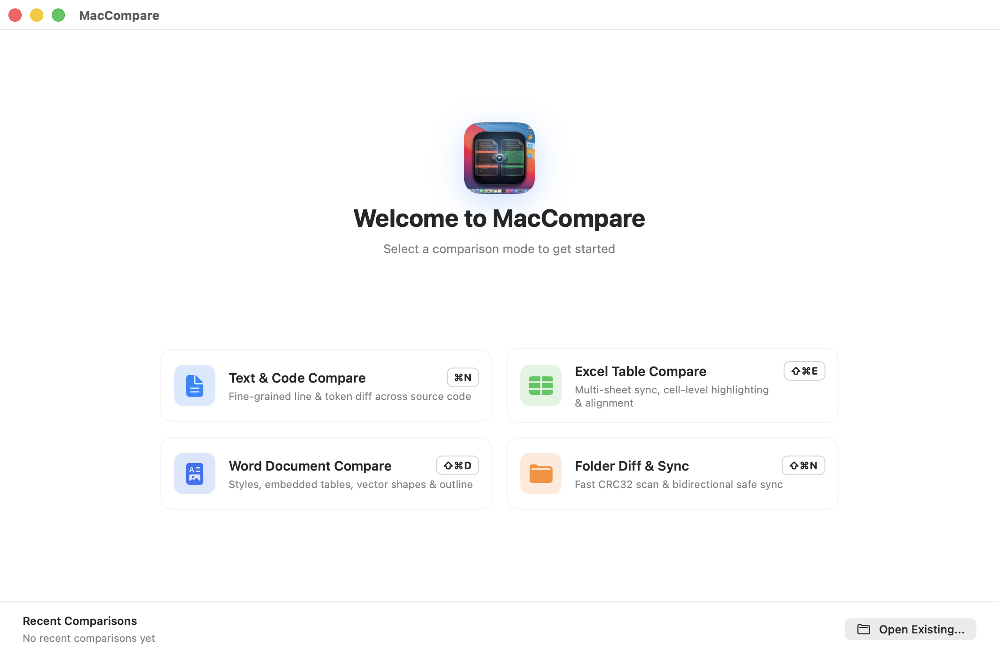

下一代 macOS 文件比对与合并套件
基于 Rust 高吞吐差分引擎与原生 SwiftUI 深度构建。内置双模 AI 代码意图分析、海量数据流式视口分页与双引擎调度，专为 macOS 打造。

为极速与优雅而生
原生级响应速度，兼顾直观的视觉反馈与强大的生产力工具。
端侧离线与云端双模 AI 智能助手
内置 Google Gemma 3 端侧模型（100% 本地离线隐私保护）并兼容 DeepSeek、OpenAI 与本地 Ollama。秒级提炼代码改动意图，生成规范 Git 提交信息。
Rust 核心与双引擎架构
支持在偏好设置中自由切换 Rust 高性能核心或 Swift 原生引擎，支持 Myers 算法与并发 Rayon 扫描。
海量表格与多工作表比对
集成 Calamine 与 Memmap2 流式解析，64位行哈希秒级筛选，视口分页保持 30MB 极低内存，表头双向像素级锁定同步滚动。
Word 结构化全要素比对
支持 .docx/.doc 段落富文本样式、原生内嵌表格网格、多媒体指纹与矢量图形 Shape 深度对比。
启动欢迎主页与历史记录
2x2 黄金对称四大模式直达、全局持久化历史会话一键恢复与单侧文件即时预览。
对齐幻影行 (Phantom Lines)
直观的空白对齐与字符级高亮，差异块一目了然，支持左右双向差异合并采纳。
双向目录同步
支持深度 Hash 与元数据比对模式，带预演 (Dry-Run) 安全机制的一键目录双向同步。
Git 三向合并 (3-Way Merge)
无缝衔接 Local、Base、Remote 冲突分支，智能自动解决非冲突项，提供完整 Git CLI 支持。
多标签与快捷循环切换
支持像 Safari 一样自由拖拽拆分与合并窗口，支持 ⌃Tab 快捷键无缝循环切换多任务标签。
原生多语言与深浅外观
内置中文、英文、日文支持，完美适配 macOS 全局系统主题自适应与快捷切换。
就地热更新与 Homebrew 生态
支持微信同款流式下载与一键重启覆盖，多语言更新日志自动呈现，提供 Homebrew 终端极速分发。
终端命令行与 Git 工具集成
一键配置为 Git 默认合并与比对工具，在终端中随时唤起。
# 1. 比较 Excel 表格 (.xlsx/.xlsb/.xls/.csv/.tsv) 与 Word 文档
$ mcdiff sales_2025.xlsx sales_2026.xlsx
$ mcdiff contract_v1.docx contract_v2.docx
# 2. 文本与代码对比
$ mcdiff main.rs main_refactored.rs
# 3. 配置为 Git 默认合并工具
$ git config --global merge.tool maccompare
$ git config --global mergetool.maccompare.cmd 'mcdiff "$LOCAL" "$REMOTE" -b "$BASE" -m "$MERGED"'
$ git config --global mergetool.maccompare.trustExitCode true即刻体验极致流畅的比对体验
支持 macOS 14.0 Sonoma 及以上版本，开源免费。
免费下载 DMG